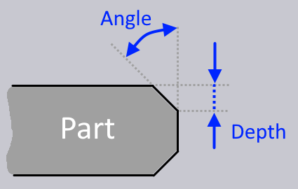

斜切
Bevel cut用在板材设计中，以创建更易于焊接的零件。斜边增加了焊缝表面区域，从而产生更强的焊缝。通过隐藏焊接线，在斜边上焊接也可帮助改善焊接边缘的美观性。

TecZone Laser 支持四种不同类型的斜角型材：


这些型材是通过沿着轮廓的任何边缘使用_最多_三种切割来实现的。下图显示了这三种切割，按加工顺序排列。
-
底部倒角切割
-
垂直切割
-
顶部倒角切割 不同的斜角型材将需要这些切割的不同组合。例如，Y斜角类型将需要垂直切割和顶部倒角切割，而DY斜角类型将需要所有这三者。倒角使用倒角角度和倒角深度定义。以下是顶部倒角的定义方式。底部倒角的定义方式类似。

创建斜切
如果满足以下条件，则为零件启用斜切：
-
选择了可以_倾斜_切割头进行斜切的TruLaser机床。
-
板材厚度大于或等于3毫米。
-
已选择包含斜切工艺类型的LTT（激光工艺表）。在满足所有这些条件的情况下，激光切割面板具有 可以编程斜切的Chamfer区域。

-
Top chamfer ° 和 Top chamfer depth必须非零，才能创建顶部倒角切割。
-
Bottom chamfer ° 和 Bottom chamfer depth必须设为非零，才能创建底部倒角切割。
-
如果两个倒角深度的总和与板厚相同，则倒角有效地定义了零件的外边界，上图所示的_垂直切割_并不是真正必要的。然而，有时通过垂直切割可获得更整洁的边缘，您可以使用 Force vertical cut 开关以将其打开。激光切割线投影到零件的_顶部表面_并显示在零件上。斜切路径周围显示黄色高亮，上图标记了所有三个零件。